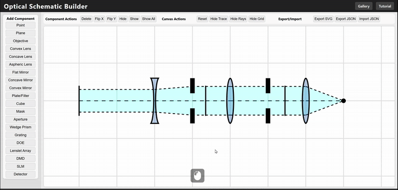

General Steps
- Add components from left sidebar.
- Adjust blue arrow for where new components will be placed.
- Flip, hide, or delete components.
- Change ray shape and color.
- Export as SVG or JSON.
Quick Demo
1. 4F System
Use hidden Plane, Convergent and Divergent ray shapes to draw focal points between components
2. Mirror in Convergent Ray Path
Use Manual ray shape to draw arbitrary ray paths.
3. Ray truncation with Aperture
Use hidden Plane and Manual ray shape to draw rays after apertures.
4. Splits Light with Dichroic Mirror/Cube
Use hue slider to adjust ray color. Use color palette to quickly select existing colors. Add multiple rays for more wavelengths.
5. Dispersion with a Grating
Enable color gradient to represent dispersion.
Control Manuals
Mouse Controls
- Left click: Select component or add from sidebar
- Right click + drag: Pan the canvas view
- Mouse wheel: Zoom in/out
Component Actions
- Delete Selected: Remove chosen component
- Flip X/Y: Mirror component orientation
- Hide/Show: Toggle component visibility
- Show All: Reveal all hidden components
Render Options
- Reset: Reset entire canvas
- Hide Trace: Toggle center trace line visibility
- Hide Rays: Toggle ray rendering style
- Hide Grid: Toggle alignment grid
Export/Import
- Export SVG: Save as vector image
- Export JSON: Save complete schematic to local directory
- Import JSON: Load saved schematic from local directory